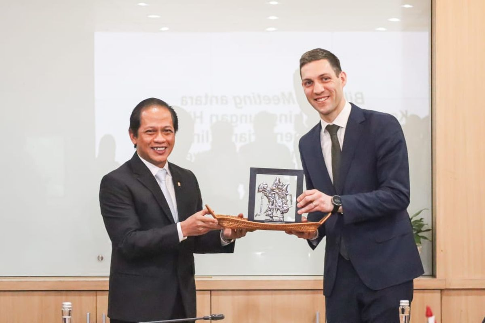
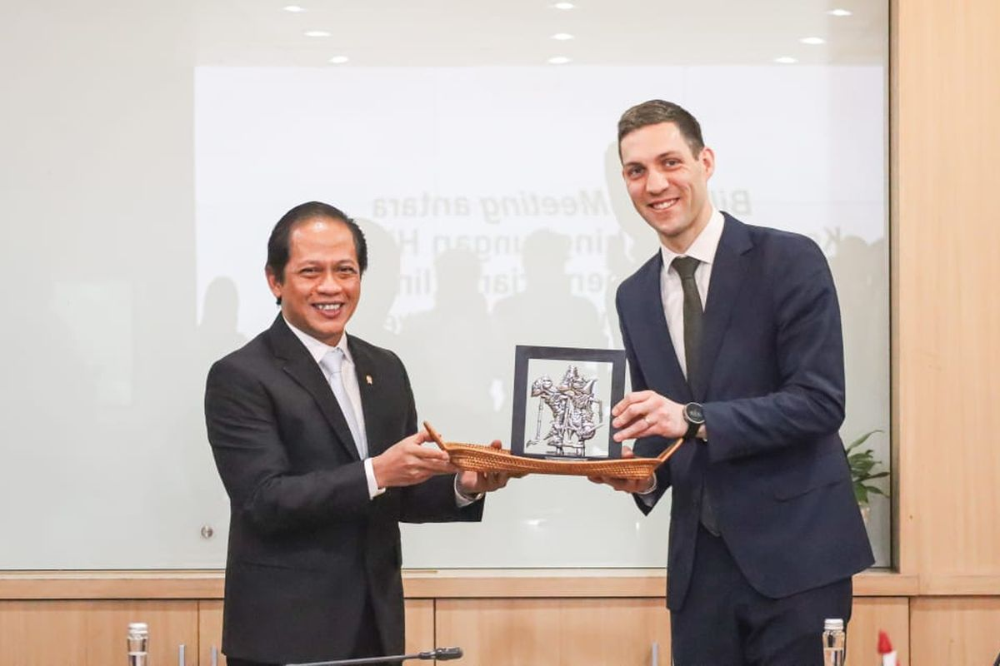

Norwegia dan Indonesia telah bekerja sama sejak tahun 2010 dan berfokus pada konservasi hutan dan perubahan iklim. Pada tahun 2023-2025, kedua pemerintah memperkuat kemitraan lingkungan dan kehutanan termasuk upaya restorasi mangrove dan lahan gambut serta mekanisme perdagangan karbon. Tak hanya itu, hal yang mendorong kerjasama kedua negara ini adalah untuk mengurangi emisi dari deforestasi dan degradasi hutan, di mana Norwegia memberikan dana untuk konservasi dan rehabilitasi hutan. Maka dari itu, belum lama ini kedua negara memperpanjang kemitraan ini hingga tahun 2030 sehingga kolaborasi ini akan berlanjut dalam jangka panjang.
Kerjasama antara Norwegia dan Indonesia dalam aspek ekosistem darat berfokus pada pengurangan emisi gas rumah kaca dari sektor kehutanan dan tata guna lahan melalui kemitraan iklim dan hutan yang diperbaharui. Proyek-proyek yang didukung Norwegia meliputi pengurangan emisi karbon dari FOLU (forest land and use), konservasi keanekaragaman hayati, restorasi hutan/gambut, dan sudah mempengaruhi kebijakan iklim/hutan Indonesia. Kemitraan ini sedang berada pada fast implementasi nyata untuk proyek-proyek besar termasuk rencana karbon dan dukungan terhadap target nasional seperti Rencana Operasional FOLU Net Sink 2030 milik Indonesia.
Norwegia telah berkomitmen mendanai upaya Indonesia misalnya, Indonesia menerima pembayaran sebesar US$60 juta atas keberhasilannya mengurangi deforestasi pada periode 2019-2020. Sejak tahun 2022, Norwegia telah menjanjikan total US$216 juta (Rp 3,5 triliun) untuk mendukung inisiatif ini.
Mencakup peningkatan kapasitas untuk memperkuat penyerapan karbon hutan melalui pengelolaan hutan lestari, rehabilitasi hutan, dan perhutanan sosial.
Program ini mendukung pelestarian keanekaragaman hayati dan mengurangi emisi dari kebakaran lahan gambut serta dekomposisi yang merupakan aspek kunci SDG 15.
Kemitraan ini memperkuat penegakan hukum untuk memerangi kejahatan lingkungan yang berkontribusi pada tata kelola lingkungan yang lebih baik
Kedua negara meluncurkan perdagangan karbon berbasis teknologi sebagai bagian dari upaya kolektif di bawah Persetujuan Paris yang memungkinkan Indonesia mengakses sumber pendanaan alternatif untuk mitigasi iklim.
Pendanaan berbasis hasil, dukungan teknis untuk MRV, dan mekanisme pengelolaan dana
Tujuan: Verifikasi pengurangan emisi dan sektor kehutanan dan penggunaan lahan sehingga INdonesia memenuhi target Net Sink 2030.
Dampak contoh: Memungkinkan Indonesia menerima pembayaran hasil setelah emisi yang berkurang terverifikasi
Restorasi ekosistem, rehabilitasi lahan gambut perbaikan tata kelola air dan penanggulangan kebakaran lahan
Contoh pelaksanaan dan kerjasamanya adalah teknis melalui IKI/UN/UNOPS dan lembaga penelitian dengan pendanaan serta dukungan kapasitas

Dukungan untuk pencegahan kebakaran, patroli, restorasi, dan penguatan kapasitas masyarakat serta otoritas daerah
Verifikasi penurunan emosi dari pengurangan kebakaran yang memicu pembayaran RBC

Pembicaraan atau penandatangan instrumen bilateral dan dukungan untuk desain mekanisme klaim kredit/transfer (termasuk keterlibatan GGGI pada inisiatif Article 6). Ini memperkuat opsi perdagangan kredit karbon yang sah dan pengakuan internasional atas hasil Indonesia